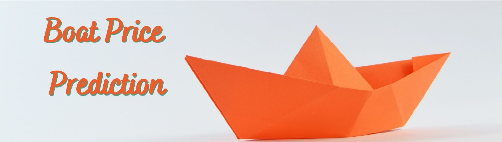

Boat Price Prediction Project
Boats and the sea have always been a passion of mine. There's something about the feeling of the wind in your hair, the sound of the waes and the freedom of being out on the open sea water that just can't be beaten. As someone who has spent countless hours researching boats and dreaming about owning one in the future, I've alwaysy been curious about how mcuch different boats cost and what factors impact their prices. That's why i decided to combine my love for boats with my interest in machine learning to create a boat price prediction model in Python. By using historical data and advanced algorithms, I hope to develop a tool that will help me make more informed decisions about buying and selling boat one day.
Problem Definition
There are many factors that can impact the price of a boat, including its age, brand, model, condition, location, size and other factors. To be able to assess objectively the value of a boat by its characteristics and country it will be useful to create a broad picture of the market and make an assuption based on real market data. To address this, the project aims to get data from the web, do a deep exploratory data analysis and then create a machine learning model that can predict the price of a boat based on a arange of relevant factors. Some of the questions asked before the analysis are:
Tools/Libraries used
Data Source and Data Description
This is a standalone dataset collected by scraping the boat24.com website using Scrapy. I selected this website as it is a popoular onlne marketplace for boats, with a wide range of listings for different types of vessels from various countries around the world. By collecting the data myself, I was able to ensure that the dataset was up-to-date and comprehensive, and that it contained all the information necessary for training a machine learning model. The code for the web scraper is avaliable here, as well as the original csv file of the data. The original data contains the following columns:
Exploratory Data Analysis
The original dataset contained around 12000 rows of data but through data cleaning that ammount was reducted to exactly 8971 rows of data, each containing information about a particular boat ad. Some of the columns after cleaning still contained a lot of null values and thus will not be used in the final prediction but will still be used in the EDA to gain valuable insight. First we will look at some of the basic characteristics to see if we can gain some insight.

It turns out that most of the boats are located in Germany which can suggest that the website might me most popular there, but it can also suggest that Germany is a highly popular sailing country. My home country, Croatia, is located at the 6th place, which is impressive for such a small country but highly dependant on its nautical tourism. Croatia being a country with a smaller population and lower standard of living might suggest that the boat prices might be lower than average, thus making it a good purchasing option.

Also, we can see that most of the boats are either in "good condition" or "as new" meaning they are propably less than 10 years old and in a good shape.

The most popular boat types are motor boats and sailing boats, making for a great share of ads. The rest of the boats are all mostly variations of different motors boats such as speed boats, hardtops, flybridges and so on... What I was mostly interested is the difference between sailing boats and motor boats, since a large potion of charter boats are sailing boats, but as it turns out they are not the most common boat type on the market. On the other hand we can see a huge price difference between larger boat categories. There are a few ads for very large boats such as Superyachts which skew the price distribution by a lot.

As for the most popular brand of boat, that turns out to be Janneau, Beneteau and Bavaria, which in my opinion is the said reason that there are a lot of charter boats on the market, with the most popular brands being the ones mentioned. After that the next most popular brand is Sunseeker which is popular for its luxurious motor boats. Even though Sunseeker is not the most popular brand, we can notice that it is on average the one with the highest price.


Next we will take a look at different boat specs such as the engines they use, propulsion type, etc... The most popular brand of engine is the Volvo Penta, which is a distingushed engine manufacturer for a very long time. A lot of the said charter boats use these engines and they often the fan favorite. The by far most common material boats are made of is GRP (Glass-fibre Reinforced Plastic) but on the other hand we can see that the most expensive boats are made out of carbon fibre and aluminum. Carbon fibre is a notoriously strong material for sailing yachts while aluminium is often used to make superyachts. As for the propulsion, the most common propulsion type is the Inboard Direct-Drive, and the Outboard engine.
Enough of the EDA for now, let's get to machine learning.
Data Modelling
Let's first take a look at the correlation matrix. We can notice that length and width are highly correlated, which kind of makes sense because increasing the general boat size means making the boat both longer and wider. I could have removed the boat width completely since one size feature might be enough but I didn't since the correlation isn't extremely high. We can notice that the boat size might be the strongest factor determining the price. We can notice a trend that with the increase of the boat size the price increases drastically after around 30 meters, for the most part.
I decided to compare a basic linear regression model and neural networks. The main reason I chose linear regression for this is for the simplicity of interpreting the model, which ANNs aren't ideal for. I evaluated the models using MAE and MSE even through MSE but be the better option because of outliers in the data. In total I made one linear regression model and three artificial neural networks, each having their complexity increased in comparison to the last one.
| Model | MAE | MSE |
|---|---|---|
| Linear Regression | 45667.90 | 5200817068.73 |
| ANN (Input: 121, Hidden: 121, Output: 1) | 34381.004 | 9830265000.0 |
| ANN (Input: 121, Hidden: 121, Hidden: 121, Output: 1) | 34995.54 | 14412964000.0 |
| ANN (Input: 121, Hidden: 242, Output: 1) | 34628.77 | 10111264000.0 |
Overall, ANN model with increased number of neurons but fewer layers performed the best on this data.
Conclusion and key takeaways
Being an undecisive buyer, this helped me figure out what works more for me. I would like to own a sailing boat 11m long and about 3.6m wide with 2 cabins in total with other features randomized. With the ANN model I got the price of 109967.93 GBP, which is reasonable for a boat that size.
Key takeaways are:
Weaknesses and what can be improved